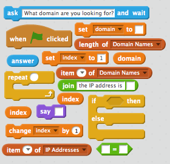
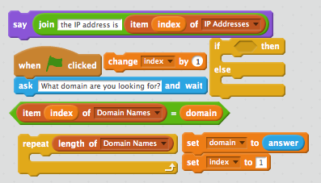
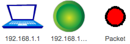
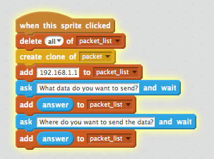

Created by Marc Scott / @coding2learn
using reveal.js

How The Internet Works by Marc Scott is licensed under a Creative Commons Attribution 3.0 Unported License.
Do you know the difference between them?
Try and write down / explain your ideas
Most people don't know what the Internet is.
This guy certainly doesn't, and he's a US senator...

He was partially correct though - the internet is a little like a "Series of Tubes"
It is a global network of computers, connected by fibre optic and copper cables or wireless and satellite signals.
On it's own, the internet is nothing more than a lot of very expensive equipment.

Tim Berners-Lee invented the Web.
To understand how the Web works, we're going to do a little exercise.
We're going to produce a very tiny website. It won't be part of the World Wide Web though, as it is going to sit on your computer alone and can't be accessed from outside.
First thing to do is to create a new directory in your home directory. Call it myWebsite
Open up Notepad or some other text editor
Now copy and paste the following into your document
<html>
<body>
<h1>My First Webpage</h1>
<p>This is my first webpage. I hope you enjoy it.</p>
<img src="http://imgs.xkcd.com/comics/computer_problems.png">
<a href="secondpage.html">Link to my Second Page</a>
</body>
</html>
Save your file as
firstpage.htmlThe name is important - make sure it is all lowercase and that the file ends in
.html.txtNow create a new document.
Now copy and paste the following into your document
<html>
<body>
<h1>My Second Webpage</h1>
<p>This is my second webpage. I hope you enjoy it as much as the first.</p>
<img src="http://imgs.xkcd.com/comics/tech_support_cheat_sheet.png">
<a href="firstpage.html">Link to my First Page</a>
<a href="http://www.google.com">Link to Google</a>
</body>
</html>
Save your file as secondpage.html
Now have a look inside the directory you created. You should see two icons for the two files that you created and both should look like web browser icons
Double click the firstpage.html file and it should open up in a webbrowser.
To open your file in a text editor again - right click on the file and choose "Open with" and select Notepad.
If your pages didn't work then check the code again and check your file names.
Now have a go at creating a third page, and try linking to it from the other two.
The world wide web is a load of documents, like the two that you created, that all link to each other and are stored on different computers all over the world. The computers are called Web Servers

A web browser is a piece of software that you have installed on your computer
How many of the web browsers can you name from the logos?

Web browser can take the languages of the web (html, javascript, actionscript and many more) and display them in an way that is easy for you to read and interact with.
For instance, here is a little HTML code
And you can see how your browser renders it below
Look at your browser's address bar. What ever is written there is the URL of the page you are on.
What ever is written there after the www but before the first / is the domain name of the site you are on
You'll be very familiar with some domain names like;
google.com
facebook.com
yahoo.com
youtube.com
wikipedia.org
Domain names are a little like addresses. For instance, the Prime Minsiter lives at:
10 Downing Street
London,
SW1A 2AA

10 Downing Street
London,
SW1A 2AA
This is nice and easy for humans to say and remember. Another way of saying where the Prime Minister lives would be to say he's at:
51° 30′ 12.23″ N, 0° 7′ 39.5″ W
This is tricky for a human to remember but great for a computer. Try copying and pasting it into Google Maps and see what happens
Domain names are like address, they are designed for humans to read and remember. In reality a computer's address (that allows other computers on a network or the internet to find it), is made up of numbers.
Computer use IP addresses to send messages to each other.
Your Computer's current IP address should be shown below
We need domain names because IP addresses are too difficult for humans to remember.
Imagine typing in
http://74.125.239.116Try these as well and write down the corresponding domains:
1. http://212.58.246.90
2. http://77.91.251.10
3. http://72.21.210.29
When I type www.google.com into my address bar, my browser sends off a message to Google's servers asking for the webpage.
My computer needs to know the IP address of Google's server, and to do this it looks it up on a Domain Name Server
A Domain Name Server (DNS for short) is a special computer on the internet that stores tables of domain names and IP addresses.
Watch the video and make a few notes as you go along
Imagine you had to explain DNS to somebody who had no idea what it was.
Using whatever software you like (or even pen and paper if you prefer), create a product that you could use to help explain DNS to someone. You could create a poster, a presentation, a report. It's really up to you.
Call it DNS Model
A DNS has a table stored on it that looks something like this:
| Domain Name | IP Address |
| google.com | 74.125.239.116 |
| bbc.co.uk | 212.58.246.90 |
We're going to have to build a DNS Table to begin with. This is going to be made up of two lists.
Create a new list called Domain Names and then another list called IP Addresses
To the Domain Names list add the domain name google.com
To the IP Addresses list add the IP address 74.125.239.116
We're going to need a few more Domain names and IP Addresses to populate our table.
Goto this site
Use the webpage to look up some common domain names like facebook.com and youtube.com and add them to the lists.
You should end up with something like this.
Try and get at least 10 domain names and their corresponding IP Addresses

When you type in a URL into a webbrowser address bar, your computer consults the DNS server, to find the IP address.
The DNS server has to lookup the domain name and find the corresponding IP address
To do this the server needs to use a searching algorithm
On the slide below you're going to be presented with an Identity Parade Lineup. You need to find this face:
You could have selected people at random. This is one way of accomplishing a search.
Or maybe you started from one side and worked your way across. This is how a computer program would accomplish a search.
This method of searching is called a linear search.
Imagine we had a list of 'things'
[cat,dog,horse,mouse,rabbit,parrot,elephant]
If we wanted a computer to program to find the position of the element parrot it would check from left to right
The program would check what was at position 1, see if it was parrot and if it wasn't it would move onto position 2, and so on.
As a computer reads through a list, it needs to keep track of where it is. This is what an index is for.
Imagine we have the following two lists:
OperatingSystems = ['Mac OSX','Windows 8','Android','iOS','Ubuntu']
Rating = ['4/5','2/5','4/5','3/5','5/5']
The items in the first list are Operating systems. The items in the second list give a user rating out of 5.
Imagine we wanted to find out the rating out of 5 for Android.
We could step through the list of operating systems until we found Android.
This would not tell us where to find the rating out of five in the second list though. It would just tell us that Android exists in the first list.
OperatingSystems = ['Mac OSX','Windows 8','Android','iOS','Ubuntu']
Rating = ['4/5','2/5','4/5','3/5','5/5']
As we move through (iterate) the first list searching for 'Android', we keep a count of our position.
The algorithm looks something like this:
index = 1index (position 1)1 to index.index (position 2)1 to index.index (position 3)index of the second listindex (position 3) of the second list is 4In our Scratch program so far we have a list of domain names and a list of IP addresses.
We need to be able to conduct a linear search on the list of domain names to find the position of any given name.
You're going to need a couple of new variables to start.
domainindexdomain is set to the answer.index is set to 1index of the Domain Name list = the variable domainindex of the IP Address listindex by 1
when GreenFlag clicked
ask "What domain are you looking for"
set domain to answer
set index to 1
repeat (length of Domain Names)
if (index of Domain Names) = domain
say ("the IP address is", index of IP Addresses)
else
change index by 1
Try and flick back up to the pseudocode and figure out how to place them before scrolling down
If you're stuck here are a few of the blocks that have been stacked for you.
See if you can assemble the script now, before scrolling down.

You're going to try an implement your own Linear Search program now.
The internet is a very large network, but at the end of the day it is still just a network.
You're going to build a model network in Scratch, that shows how information is past around.
Goto the Scratch website and create a new project
Call the project "Virtual Network"
We're going to need three sprites to start with.
Here's the ones I used but feel free to select,import or draw your own.
We'll name the sprite for the computer with an IP address.
On most home networks the IP address will fall into the range of 192.168.1.1 up to 192.168.1.254. We'll give our computer the first IP address, so call it 192.168.1.1
We'll name the router 192.168.1.254 as this is normally the default IP address for a home network router
We'll name the packet packet because it's a packet
Here's a screenshot of my sprites so far and a video to create them if you need it.
Below is a simplified description of how computers on a network send messages to each other.
To start we're going to set up the initial script on the laptop.
The script needs to do the following
packet_list.See if you can build this, but there's help below.
when this sprite clicked
create clone of packet
add 192.168.1.1 to packet_list
ask "What data do you want to send?"
add answer to packet_list
ask "Where fo you want to send the data?"
add answer to packet_list


If you click on the laptop, then you're list will be populated with three pieces of data.
The probelm is that if we click the laptop a second time then more data is added. We need to empty the list each time the laptop is clicked.
Add in a block to empty the list when the laptop is clicked.
Click the laptop to make sure the script is working.
As we're using clones of the packet, we're going to need to hide the parent sprite, then when the clone is created it needs to go to the mouse pointer and show itself.
So far, when the laptop is clicked a packet is created and a list containing IP addresses and data is filled.
The packet now needs to go to the router, so that it can be directed to the correct computer on the network.
The following should now happen:
Give this a go.
when I start as a clone
go to mouse-pointer
show
go to front
forever
if length of packet_list = 3 then
point towards 192.168.1.254
move 1 step
If you test your script now the packet should move off towards the router and then jiggle there for awhile.
We now need to tell the router that the packet has arrived so it can direct it onward.
Think about how you might achieve this and have a go. Help as always is available below.
if distance to 192.168.1.2.54 < 10
broadcast "at router"
stop this script

So we don't end up with thousands of clones, we need to delete the clones when the simulation starts.
It's time to script the router. The router is going to find out where the packet needs to be sent and send it in the right direction.
destination_listdestination_listdestination_list
when I receive "at router"
add x position of item last of packet_list to destination_list
add y position of item last of packet_list to destination_list
broadcast foward_packet

Again, we're going to need to make sure that the destination_list is emptied when the simulation runs.
We now have a simulation that sends a packet to the router and the router stores the destination.
However, we only have one computer.
We can still test our script out, by getting the laptop to send a packet to itself.
Run the simulation sending any data you want to 192.168.1.1
The destination list should fill with the x and y coordinates of the laptop.
Next the packet needs to head off to it's destination
To do this, the packet needs to listen out for the forward_packet broadcast.
The packet should then head off to the x and y coordinates in the destination_list
when I receive forward_packet
glide 5 secs to x: item 1 of destination_list y: item 2 of destination_list
broadcast arrived

Nearly there now.
To finish off scripting the following needs to happen.
The laptop has to listen out for the packet to broadcast arrived
When this happends it can say the contents of the packet_list
when I receive arrived
if touching packet
say (join "Received " (join item 2 of packet_list (join " from " item 1 of packet_list)))


The last thing to do is to duplicate the laptops and change the IP addresses each one adds to the packet_list
Play around with your network by clicking on different laptops and entering data and an IP address to send it to.
Make sure you understand the basics of how the network works
Remember - this is an oversimplification but it should give you an idea.
You can find a working model here if your's doesn't work.
The real internet is obviously much larger.
On the internet packets are passed from one router to another, until they eventually end up on the network of the destination computer
Also, not all the packets will go by the same route. Different packets can travel to the same computer by going across completely different countries!
Choose an activity or activities that you feel will stretch your abilities but that you feel comfortable with.
Alter your network model so that it includes a DNS lookup.
The sending computer should ask for a name to send to and the IP address should then be searched for.
The packet can then be sent to the looked up IP address
Go back and look at the web pages you created using HTML.
Try to build on the website by adding more complex and a greater number of pages.
You can find help on HTML at [w3schools](http://www.w3schools.com/html/)
Using any software you desire: